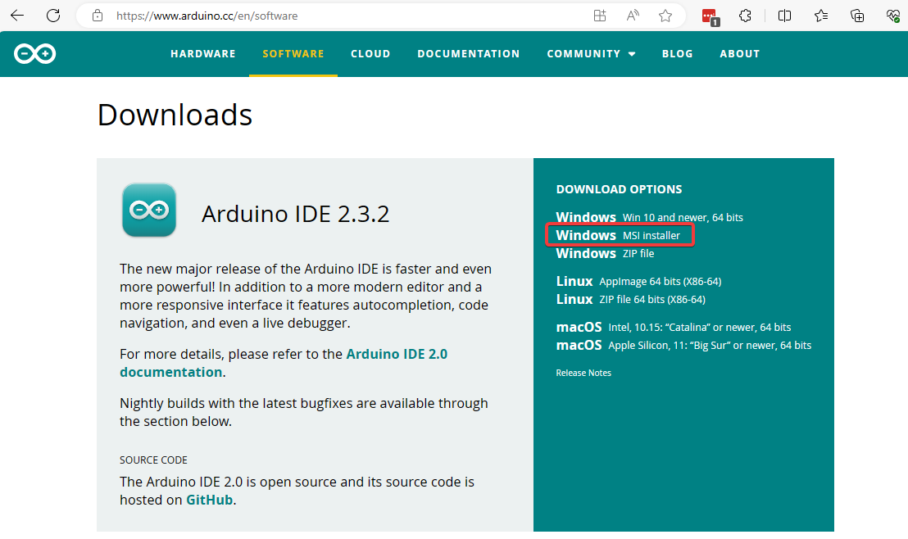

เตรียมเครื่องสำหรับพัฒนา IoT
ก่อนการพัฒนา IoT จะต้องทำการติดตั้ง โปรแกรม สำหรับสร้าง Environment สำหรับการพัฒนาโปรแกรมด้าน IoT
1. Chocolatey
Chocolatey เป็นเครื่องมือการจัดการซอฟต์แวร์ package management แบบฟรีสำหรับ Windows เราสร้างติดตั้งโปรแกรมต่างผ่านทาง Repository ของ Chocolatey https://chocolatey.org/install
เปิด Powershell ด้วยสิทธิ Administrator
> Set-ExecutionPolicy AllSigned
> Set-ExecutionPolicy Bypass -Scope Process
> Set-ExecutionPolicy Bypass -Scope Process -Force; [System.Net.ServicePointManager]::SecurityProtocol = [System.Net.ServicePointManager]::SecurityProtocol -bor 3072; iex ((New-Object System.Net.WebClient).DownloadString('https://community.chocolatey.org/install.ps1'))
ตัวอย่างหน้าจอ
Reboot เครื่อง หลังจากนั้น ให้ทำการติดตั้ง package จาก Powershell ดังนี้
- rsync
- wget
- python
- nodejs
- make
> choco install rsync wget python nodejs
> choco install make
ตัวอย่างหน้าจอ

2. Arduino IDE 2
Arduino IDE เป็น Editor สำหรับการพัฒนาโปรแกรม ด้วย Arduino Framework https://www.arduino.cc/en/software และ Download MSI installer

กด Just Download

ดำเนินการติดตั้ง โปรแกรมแบบ ปรกติ

เปิดโปรแกรม Arduino IDE และ ไปยัง เมนู File > Preferences เพื่อทำการตั้งค่า

เพิ่มเติม บอร์ด ESP32 ให้แก่ Arduino IDE เพื่อให้สามารถใช้ สามารถพัฒนา iot ร่วมกับ ESP32 บอร์ดได้

เพิ่ม link Additional Boards Managers
https://espressif.github.io/arduino-esp32/package_esp32_index.json
Ref อ้างอิง Code สำหรับ ESP32 Core Arduino https://github.com/espressif/arduino-esp32
ข้อมูลสำหรับ บอร์ด ตระกูล ESP32
| SoC | Stable | Development | Datasheet |
|---|---|---|---|
| ESP32 | Yes | Yes | ESP32 |
| ESP32-S2 | Yes | Yes | ESP32-S2 |
| ESP32-C3 | Yes | Yes | ESP32-C3 |
| ESP32-S3 | Yes | Yes | ESP32-S3 |
| ESP32-C6 | No | Yes | ESP32-C6 |
| ESP32-H2 | No | Yes | ESP32-H2 |
https://products.espressif.com/#/product-comparison
อ้างอิง

| ESP8266 | ESP32 | ESP32-S2 | ESP32-S3 | ESP32-C3 | ESP32-C6 | |
|---|---|---|---|---|---|---|
| Announcement Date | 2014, สิงหาคม | 2016, กันยายน | 2019, กันยายน | 2020, ธันวาคม | 2020, พฤศจิกายน | 2021, เมษายน |
| Main processor | Tensilica L106 32 บิต (สูงสุด 160MHz) | Tensilica Xtensa 32 บิต LX6 (สูงสุด 240MHz) (ตัวเลือกคู่) | Tensilica Xtensa 32 บิต LX7 (สูงสุด 240MHz) | Tensilica Xtensa 32 บิต LX7 คู่ (สูงสุด 240MHz) | RISC-V 32 บิต (สูงสุด 160MHz) | RISC-V 32 บิต (สูงสุด 160MHz) |
| SRAM | 160KB | 520KB | 320KB | 512KB | 400KB | 400KB |
| ROM | 0 | 448KB | 128KB | 384KB | 384KB | 384KB |
| JTAG | X | ✓ | ✓ | ? | ✓ | ✓ |
| Cache | คำสั่ง 32 KB | 64KB | 8/16KB (configurable) | ? | 16KB | ? |
| WiFi | Wi-Fi 4 (เฉพาะสูงสุด 72.2Mbps) | Wi-Fi 4 | Wi-Fi 4 | Wi-Fi 4 | Wi-Fi 4 | Wi-Fi 6 |
| Bluetooth | X | BLE 4.2 (อัปเกรดเป็น 5.0, มีข้อจำกัด) | X | BLE 5.0 | BLE 5.0 | BLE 5.0 |
| Ethernet | X | ✓ | X | ? | X | ? |
| RTC memory | 768B | 16KB | 16KB | 16KB | 8KB | ? |
| PMU | ✓ | ✓ | ✓ | ? | ✓ | ? |
| ULP coprocessor | X | ✓ | ULP-RISC-V | ? | X | ? |
| Cryptographic Accelerator | X | SHA, RSA, AES, RNG | SHA, RSA, AES, RNG, HMAC, ลายเซ็นดิจิตอล | SHA, RSA, AES, RNG, HMAC, ลายเซ็นดิจิตอล | SHA, RSA, AES, RNG, HMAC, ลายเซ็นดิจิตอล | SHA, RSA, AES, RNG, HMAC, ลายเซ็นดิจิตอล |
| Secure boot | X | ✓ | ✓ | ✓ | ✓ | ✓ |
| Flash encryption | X | ✓ | XTS-AES-128/256 | ✓ | XTS-AES-128 | XTS-AES-128 |
| SPI | 2 | 4 | 4 | ? | 3 | ? |
| I2C | 1 | 2 | 2 | ? | 1 | ? |
| I2S | 1 | 2 | 1 | ? | 1 | ? |
| UART | 2 (เพียง TX เท่านั้น) | 3 | 2 | ? | 2 | ? |
| SDIO Host | 0 | 1 | 0 | 2 | 0 | 0 |
| SDIO Slave | 0 | 1 | 0 | 0 | 0 | 0 |
| GPIO | 17 | 34 | 43 | 44 | 22 | 22 |
| LED PWM | 5 | 16 | 8 | ? | 6 | ? |
| MCPWM | 0 | 6 | 0 | 2 | 0 | 0 |
| Pulse counter | 0 | 8 | 4 | ? | 0 | X |
| GDMA* | 0 | 0 | 0 | ? | 6 | ? |
| USB | X | X | USB OTG 1.1 | ? | ซีเรียล/JTAG | ? |
| TWAI** | 0 | 1 | 1 | ? | 1 | ? |
| ADC | 1x 10-bit SAR | 2x 12-bit SAR, สูงสุด 18 ช่อง | 2x 13-bit SAR, สูงสุด 20 ช่อง | ? | 2x 12-bit SAR, สูงสุด 6 ช่อง | ? |
| DAC | X | 2x 8-bit | 2x 8-bit | ? | X | X |
| RMT | การส่ง 1x + การรับ 1x | การส่ง/การรับ 8x | การส่ง/การรับ 4x | ? | การส่ง 2x + การรับ 2x | ? |
| Timer | 2x 23-bit*** | 4x 64-bit | 4x 64-bit | ? | 2x 54-bit + 1x 52-bit | ? |
| 传感器温度 | ✓ | ✓ | ✓ | ? | ✓ | ? |
| Hall Sensor | X | ✓ | X | ? | X | ? |
| Touch Sensor | 0 | 10 | 14 | ? | X | ? |
ESP32 Pinout
การพัฒนา โปรแกรมให้สามารถใช้งานบน ESP32
 ESP pinout แบบ pdf
ESP pinout แบบ pdf
สร้าง IoT Home lab
การสร้าง IoT home lab เพื่อใช้สำหรับการเรียนรู้และการพัฒนา มีวัดถุประสงค์เพื่อให้การเรียนรู้มีประสิทธิภาพ รวดเร็วไม่เสียเวลาสำหรับการสร้าง Environment โดยการสร้าง Home Lab ในบทนี้จะเป็นการสร้างบน Windows 10/11 มีขั้นตอนดังต่อไปนี้
- ติดตั้ง Virtaulbox version ล่าสุด
- ติดตั้ง Vagrant
- ปิด Service HyperV บน Windows
- สร้าง Vagrantfile เพื่อสร้าง lab
1. ติดตั้ง Virtualbox
ไปยัง https://www.virtualbox.org/wiki/Downloads เพื่อทำการ Download โปรแกรม virtualbox และ Extension Pack

2. ติดตั้ง Vagrant
Vagrant คืออะไร

ไปยัง https://www.vagrantup.com/ ให้ Download Community Version
ตั้งค่า Path
เมื่อตั้งตั้งโปรแกรมในข้อ 1,2 เรียบร้อยแล้วให้ทำการเพิ่ม path ของ โปรแกรมเพื่อให้สามารถใช้งานผ่านทาง Command Line ได้
- เพิ่ม Path ของ virtualbox ไปยัง Environment Variable (C:\Program Files\Oracle\VirtualBox)
- เพิ่ม Path ของ vagrant ไปยัง Environment Variable (C:\Program Files\Vagrant\bin)
 กดเลือกบรรทัด path และกดปุ่ม New เพื่อเพิ่มเติมค่า
กดเลือกบรรทัด path และกดปุ่ม New เพื่อเพิ่มเติมค่า

ปิด hyperv service บน Windows
เปิด Powershell ในโหมด Administrator
> Disable-WindowsOptionalFeature -Online -FeatureName Microsoft-Hyper-V-All
 และ
และ
> bcdedit /set hypervisorlaunchtype off

ติดตั้ง Home lab
เรียนรู้พื้นฐานการสร้าง Home Lab ด้วยสร้าง Virtual Host บน virtualbox ด้วยการใช้งานคำสั่ง vagrant
- สร้าง Folder สำหรับติดตั้ง Homelab เช่น thingsboard
- ภายใน folder thingsboard ประกอบด้วย File 2 File ดังนี้
- Vagrantfile ระบุคำสั่งสำหรับการสร้าง VM (เรียกว่า Creation)
- bootstrap.sh ระบุคำสั่งที่ทำงานภายใน VM (เรียกการ Provision)
ตัวอย่าง
สร้าง VM ด้วย Debian 12 และหลังจากสร้าง VM ก็จะทำการติดตั้ง
- สร้าง Folder homelab ด้วย คำสั่ง mkdir
>mkdir homelab
- หลังจากนั้น ให้ Download ไฟล์ homelab1.zip ไปไว้ folder homelab และทำการแตก zip ให้เรียบร้อย
- และใช้ Terminal เปิดไปยัง folder homelab1
- run คำสั่ง vagrant ดังนี้
vagrant up --provision=virtualbox --provision
ตัวอย่างหน้าจอ

ขั้นตอนการทำงานเบื้องหลัง

File Vagrantfile เป็นภาษา ruby ทำหน้าที่เป็น Template เพื่อส่งต่อให้แก่ คำสั่ง Vagrant นำไปสร้าง VM บน Virtualbox
Vagrant.configure("2") do |config|
config.vm.box = "generic/debian12"
config.vm.network "private_network", ip: "192.168.56.10"
config.vm.network "forwarded_port", guest:2375 , host: 2375
config.vm.network "public_network", bridge: "Intel(R) Wireless-AC 9560 160MHz", ip: "192.168.1.10"
config.vm.synced_folder ".", "/vagrant", type: "rsync"
config.vm.provider "virtualbox" do |vb|
vb.customize [
"modifyvm", :id,
"--nested-hw-virt", "on",
"--memory", "2048",
"--paravirtprovider", "hyperv",
"--cpus", "2"
]
end
#config.vm.provision "shell" , path: "bootstrap.sh"
end
File bootstrap.sh เป็น Bash script ไว้สำหรับ Run ใน Debian สำหรับการติดตั้ง Docker , Docker compose
#!/bin/bash
echo "[ ] Start vagrant provisioning"
# Add Docker's official GPG key:
sudo apt update && sudo apt upgrade -y && sudo apt autoremove –y
sudo apt --fix-broken install -y
sudo apt-get install ca-certificates curl -y
sudo apt-get install openssh-server -y
sudo apt-get install wget tree -y
sudo apt install \
apparmor \
cifs-utils \
curl \
dbus \
jq \
libglib2.0-bin \
lsb-release \
network-manager \
nfs-common \
udisks2 \
wget -y
sudo curl -fsSL https://download.docker.com/linux/debian/gpg -o /etc/apt/keyrings/docker.asc
sudo chmod a+r /etc/apt/keyrings/docker.asc
# Add the repository to Apt sources:
echo "[ ] install docker "
echo \
"deb [arch=$(dpkg --print-architecture) signed-by=/etc/apt/keyrings/docker.asc] https://download.docker.com/linux/debian \
$(. /etc/os-release && echo "$VERSION_CODENAME") stable" | \
sudo tee /etc/apt/sources.list.d/docker.list > /dev/null
sudo apt update -y
sudo apt-get install docker-ce docker-ce-cli containerd.io docker-buildx-plugin docker-compose-plugin -y
sudo usermod -aG docker vagrant
newgrp docker